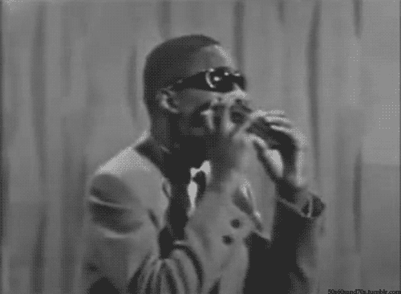

bayllasen


THE IMPACT OF BLACK ARTITS THROUGHT HOSTORY
 Throughout history, Black music has been a dynamic force that has profoundly shaped the
played a crucial role in shaping various genres, influencing cultural movements, and contributing to
the social and political fabric of societies. Here are some key aspects of the impact of Black music:
1. Roots in African Traditions:
Black music in the Americas has deep roots in African traditions. The rhythmic complexity, call-and-response patterns, and communal aspects of African music have influenced various genres, including blues, jazz, gospel, and hip-hop.
2.Blues and Jazz:
blues, originating in the African American communities of the southern United States, laid the foundation for many other genres. Jazz, born in New Orleans, is a uniquely American art form that emerged from a fusion of African, European, and Caribbean musical traditions.
Political and Social Impact:
Black music has often been a vehicle for social and political commentary. Artists have used their platform to address issues such as civil rights, racial inequality, and social justice. Songs like "What's Going On" by Marvin Gaye and "Fight the Power" by Public Enemy are examples of music with a strong social message.
Global Influence:
Black music has transcended borders and influenced musicians and audiences worldwide. From Afrobeat in Africa to reggae in Jamaica, the impact of Black music is evident across continents.
Cultural Expression:
Black music serves as a powerful form of cultural expression, celebrating identity, resilience, and creativity. It has provided a means for communities to express their experiences, struggles, and triumphs